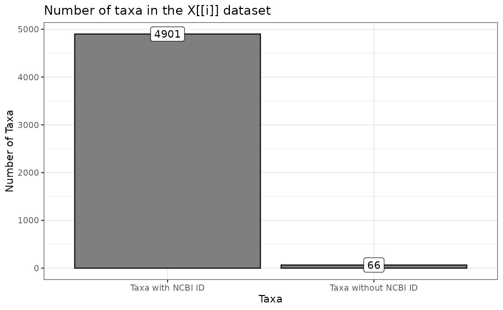
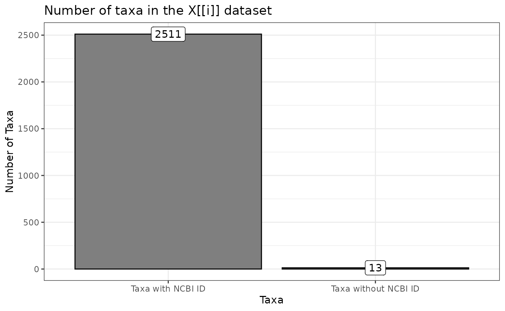
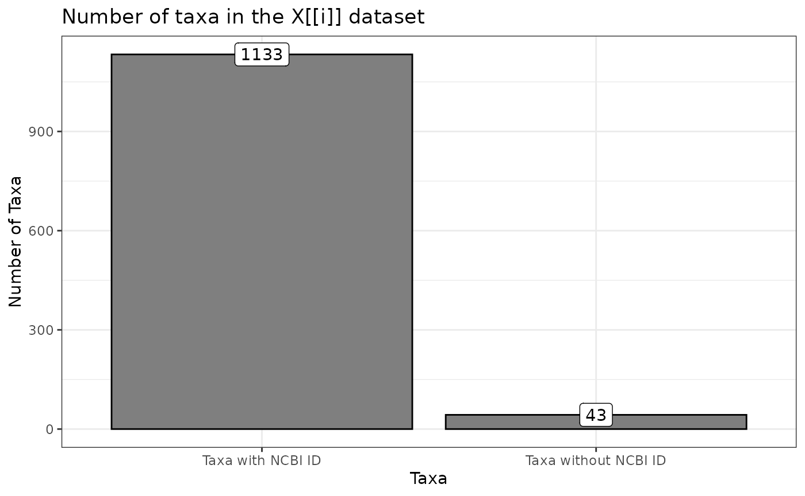

Complete BugPhyzz Stats
complete_summary_stats.RmdLoad all of the bugphyzz datasets:
physiologies <- physiologies(keyword = "all") %>%
lapply(as_tibble)#NCBI ID Stats
ncbi_stats <- function(data, phys = deparse(substitute(data)))
{
title <- paste("Number of taxa in the",phys, "dataset")
grepl("^[0-9]+$", data$NCBI_ID) %>%
as_tibble() %>%
magrittr::set_colnames("Taxa") %>%
mutate(Taxa = ifelse(Taxa == TRUE, "Taxa with NCBI ID", "Taxa without NCBI ID")) %>%
count(Taxa) %>%
ggplot(aes(Taxa, n)) +
geom_col(fill = "gray50", color = "black") +
geom_label(aes(label = n)) +
labs(title = title,
x = "Taxa", y = "Number of Taxa") +
theme_bw()
}
ncbi_list <- lapply(physiologies, ncbi_stats)
lapply(ncbi_list, print)


#> $`animal pathogen`
#>
#> $`antimicrobial resistance`#>
#> $`antimicrobial sensitivity`
#>
#> $`biofilm forming`
#>
#> $`butyrate producing`
#>
#> $`acetate producing`
#>
#> $`lactate producing`
#>
#> $arrangement
#>
#> $shape
#>
#> $`COGEM pathogenicity rating`
#>
#> $`mutation rate per site per generation`
#>
#> $`mutation rates per site per year`#>
#> $`extreme environment`
#>
#> $`gram stain`
#>
#> $`growth medium`#>
#> $`growth temperature`
#>
#> $habitat
#>
#> $`optimal ph`
#>
#> $aerophilicity
#>
#> $`plant pathogenicity`#>
#> $width
#>
#> $`spore shape`
#>
#> $`isolation site`
#>
#> $`disease association`
#>
#> $`hydrogen gas producing`
#>
#> $length